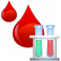

👋 About me
Senior Full Stack Developer with 18+ years of experience, specializing in React/TypeScript, Next.js, and Node.js.
Recently built AI-powered applications using RAG pipelines, LangChain, and vector databases. Deep background in PHP/Laravel and systems programming (C/C++).
📌 Selected projects
🧠 DocuMind
An AI-Powered intelligent document assistant that lets you upload PDFs and ask questions in natural language.
Next.js · React · shadcn/ui · Radix UI · RAG (Retrieval-Augmented Generation) · LangChain.js · Vector Databases (Pinecone) · LLM Integration (Groq, OpenAI) · Embeddings · Semantic Search · AI Application Development · Vercel
tol11 — C/C++ Utility Library
Multi-language utility library in continuous development since 2007. Supports multiple Visual Studio versions and includes 5 libraries.
C, C++, MFC, MySQL, XML, Windows API
Ⓜ️ HOSTKEY Modules — Production Work
Production modules for a global hosting platform:
DNS Management (PowerDNS)
External Server Management
Tags Management
Reports & Dashboards (Google Charts)
Design System & UI Modernization
API keys management
Pre-orders Management
Two-factor authentication (2FA with TOTP, Email, SMS)
Login & Social Login (Google, GitHub, VK)
PHP, JavaScript, jQuery, PowerDNS, Google Charts, MySQL, REST API, DNS Management
📱 ASO Audit Agent
AI-powered App Store Optimization audit tool with real-time analysis and actionable recommendations.
Next.js · TypeScript · React · Tailwind CSS · Mastra AI · Groq · Vercel
🔗 link-hub
Full-stack link management platform with GitHub OAuth, PostgreSQL, and Drizzle ORM.
Next.js, TypeScript, shadcn/ui, Radix UI, PostgreSQL, Drizzle ORM, Tailwind CSS · Vercel
🌡️ Temperature App
Modern weather app with real-time data, temperature conversion, history tracking, and dark mode.
React · TypeScript · Zustand · React Query · Vite · Vitest · Vercel
🌦️ My Weather App
Full-stack weather application with server-side rendering and responsive design.
Next.js · TypeScript · Tailwind CSS · Open-Meteo API · Vercel
Busincard
Business promotion platform with interactive maps and client dashboards.
PHP · JavaScript · jQuery · MySQL · DataTables · BingMap
Fitomir (e-commerce)
Full online store with shopping cart, order dispatch, product registration.
PHP · Laravel · JavaScript · jQuery · MySQL · Bootstrap
MobileGIS (Windows Pocket PC)
Mobile geographic information system for field data collection.
C++ · STL · MFC · Windows CE · GPS

Medlab (Lab automation)
Web-based workflow automation for a medical laboratory.
PHP · MySQL · JavaScript · HTML · CSS